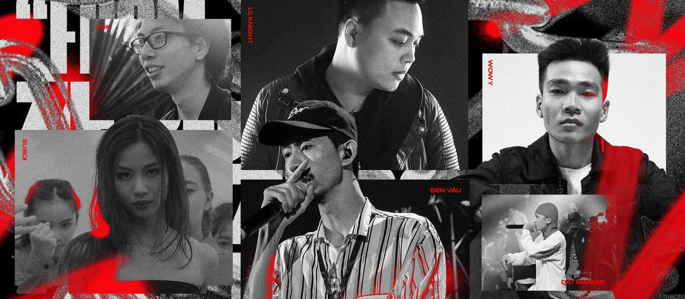
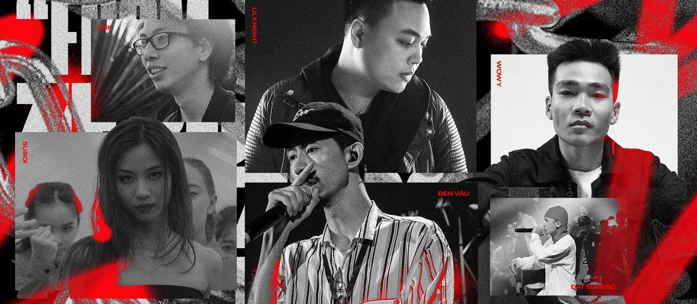

NHỮNG TRẬN BEEF 2024

BEEF 2024
- Trận beef rapper VieOn vs underground
Nguyên nhân
Ngày 6/11, HIEUTHUHAI ra mắt bài “Trình” diss hater sau khi bị đánh giá là rapper truyền thông thiếu trình độ, được truyền thông “push bẩn” khi ngồi ghế giám khảo Rap Việt mùa 4.
Phe ủng hộ VieOn
Kejo, LJ, Yii, Nomad, Rubidi, Tungdreamer… liên tục ra mắt các bài diss như:
“Bình Tĩnh”, “Già Rồi”, “Gánh”, “Vạch Trần”, “Đao Phủ”, “Chuyên Án GVR (Hồi Kết)”
Nội dung chủ yếu phản bác các công kích từ underground, bảo vệ HIEUTHUHAI và phản biện các tổ chức như GVR.
Phe ủng hộ underground
Các rapper như Bình Gold, Lil Shady, Skyler, Hades, Genzo, NorahC, Hải Hà, Duk, Tùng Pin, Melody Vibes, Zangta, Lil K, Xike… tham chiến với loạt diss như:
“ĐỉnG”, “Trên Mặt Nước”, “3TCLV”, “GVR X1”, “BuFame”, “XHaters”, “Hoang Tưởng”, “Battle và Chửi Đổng”
Cuộc chiến kéo dài gần một tháng, với hàng chục bài diss được tung ra từ cả hai phía.
Phe thứ ba: diss cả VieOn và Lil Shady
Mikayni và Gothic ra mắt “Chỉnh” và “Tỉnh”, công kích cả HIEUTHUHAI, Lil Shady, B Ray, Karik, và GDucky.
- Trận beef Thành Draw vs 16 Typh
Nguyên nhân
Ngày 5/6, Thành Draw ra mắt “15A Karma” nhắm vào 16 Typh.
Cuộc chiến nhanh chóng lan rộng khi RTee và Gonzo bị kéo vào.
Diễn biến
16 Typh đáp trả bằng “Ngồi Xuống”.
RTee tung “Chú Hải Cẩu”, Thành Draw phản công với “DUNGDAY?”.
$a Milo tham chiến với “Đốt Lốt Thành Tro”.
Kết thúc
Ngày 14/6, SpaceSpeaker ra thông báo ngừng trận beef, đồng thời phủ nhận tin đồn “16 Typh bắt bạn gái phá thai”.
- Trận beef Richchoi vs ICD
Nguyên nhân
Ngày 23/4, Richchoi ra “The liems freestyle” công kích nhiều rapper, đặc biệt là ICD.
Diễn biến
ICD đáp trả bằng “Không Giữ Lời”, “Không Muốn Dây”, “Không Lối Thoát”.
Richchoi tiếp tục với “The notorious Choi”, “Nói dối là hư / Hóa Kiếp”, “LieCD / The art of war”.
Kết thúc
ICD không phản hồi round 4, trận beef kết thúc vào ngày 9/6.
Những gương mặt tham gia beef WorkaHolic$ vs Rocky CDE
- Trận beef WorkaHolic$ vs Rocky CDE
Nguyên nhân
Rocky CDE sống lỗi giấu với anh em WorkaHolic$ show để ăn tiền riêng
Ngày 18/3, Betekar mở màn với “Niềm Tự Hào của Khu Phố” nhắm vào Rocky CDE.
Phe WorkaHolic$
Betekar, Dangrangto, Yung Tều ra loạt track như:
“Chạy Đi Em”, “Goodbye Rocky”, EP “GBR” gồm “Gọi Bố Ra”, “Gà Bẩn Rác”, “Giống Bài Ru”
Phe Rocky CDE
Rocky đáp trả bằng:
“Xin Lỗi và Cảm Ơn”, “Diễm Quỳnh, Anh nhắc em”, EP “CĐĐĐ” gồm 4 track, mini EP “WorkaHamloz” gồm “Vô Liêm Sỉ”, “Các Con Có Ba Không?”, “HackerHolic”
Bất ngờ
Ngày 14/12, Betekar ra “Workaholicbiet” nhắm vào Dangrangto và Yung Tều, khiến trận beef tưởng chừng kết thúc lại bùng lên.
- Tổng kết và tác động
Năm 2024 chứng kiến sự bùng nổ của văn hóa diss, với hàng trăm bài rap được tung ra trong thời gian ngắn.
Các trận beef không chỉ là công cụ thể hiện kỹ năng mà còn là cuộc đối thoại nghệ thuật, phản biện xã hội, và khẳng định bản sắc cá nhân.
Nhiều rapper trẻ như Kejo, Genzo, Betekar, Yung Tều, ICD, Richchoi, Thành Draw… khẳng định tên tuổi qua các trận chiến này.